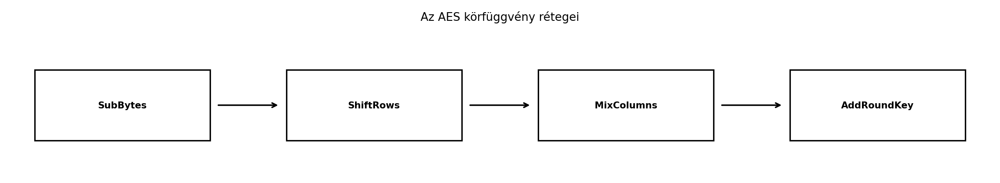

A DES 56 bites kulcsa a kilencvenes évek végére már egyre sebezhetőbbé vált: a brute-force kulcskeresés egy dedikált hardverrel napok alatt elérhetőnek tűnt, a 3DES pedig ugyan meghosszabbította az életet, de szoftverben lassú, hardverben körülményes volt. Az NIST 1997-ben nyilvános pályázatot hirdetett egy új, 128 bites blokkméretű, legalább 128 bites kulcsot kezelő, szabadon használható szabványos blokkrejtjelre. A győztes Rijndael lett, amelyet Joan Daemen és Vincent Rijmen tervezett. A Rijndael a helyettesítő–permutáló hálózat (SPN) elvét követi: minden kör négy rétegből áll, amelyek együtt biztosítják a konfúziót és a diffúziót. Ebben az alfejezetben ezt a körfüggvényt és a kulcsbővítést bontjuk le lépésről lépésre, hogy az AES ne fekete doboz legyen, hanem kézzel is követhető, tanulható konstrukció.
Definíció. Az AES (Advanced Encryption Standard, FIPS 197) egy blokkrejtjel, amelynek blokkmérete minden változatban bit ( bájt). A kulcsméret három érték lehet: , vagy bit. A körök száma a kulcsmérettől függ:
| Változat | Kulcsméret (bit) | Szavak száma | Körök száma |
|---|---|---|---|
| AES-128 | 128 | 4 | 10 |
| AES-192 | 192 | 6 | 12 |
| AES-256 | 256 | 8 | 14 |
A bájtos bemeneti blokkot állapotnak nevezzük, amit -es bájtmátrixként ábrázolunk. A bájtok feltöltése oszlopfolytonos: a bemeneti bájtok sorrendben a mátrix oszlopának sorába, majd az oszlopba, és így tovább kerülnek. A bájtokat GF elemeiként kezeljük, az irreducibilis polinom (hexadecimálisan ). A bájtok közötti összeadás a bitenkénti XOR, a szorzás pedig a polinomszorzás e polinommal való maradékos osztás utáni maradéka.
Az AES egy köre négy transzformációból áll, amit az alábbi ábra foglal össze.

A kör előtt van egy kezdeti AddRoundKey a törzskulccsal, majd teljes kör, végül egy utolsó kör MixColumns nélkül. A rétegek szerepe a következő.
A SubBytes a konfúzió fő forrása. Minden bájtot az -doboz nevű, bitről bitre képező nemlineáris függvénnyel helyettesít. Az -doboz két lépésből áll:
Az affin transzformációt azért alkalmazzák, hogy az -doboznak ne legyen algebrailag egyszerű szerkezete, például ne fixpontja a , és ne legyen lineáris. Az -doboz értékei szabványos táblázatban találhatók; például , , . Az -doboz invertálható, mert az inverzképzés és az affin transzformáció is invertálható, így a visszafejtésnél az inverz -doboz használható.
A ShiftRows a bájtok permutációja a -es állapoton. A sor változatlan marad; az sort bájttal, a sort bájttal, a sort bájttal forgatjuk balra, azaz kisebb oszlopindex felé. Ha a sor elemei , akkor a ShiftRows után a -edik sor elemei lesznek. Például a sorban az oszlopok sorrendje lesz.
A ShiftRows a diffúzió első rétege: az egy oszlopban lévő bájtok a következő lépésben más oszlopokba kerülnek, így a MixColumns kimenetei a következő körben az egész állapotra szétterjednek.
A MixColumns minden oszlopra ugyanazt a lineáris transzformációt alkalmazza GF felett. Ha az oszlop bemenete , akkor a kimenet:
ahol az elemek
GF-beliek,
az összeadás XOR, a szorzás pedig a fenti testbeli szorzás. A
-vel
való szorzást xtime-nak nevezzük:
ahol az eredményt bitre vágjuk. A -mal való szorzás pedig .
A MixColumns adja a diffúzió második rétegét: minden kimeneti bájt az oszlop mind a négy bemeneti bájtjától függ. A mátrix megválasztása biztosítja, hogy a transzformáció invertálható legyen, és a kimeneti bájtok lineárisan függjenek az összes bemenettől.
Az AddRoundKey a legegyszerűbb lépés: az állapot bájtját bitenként XOR-oljuk a körkulcs bájtjával. A körkulcsot a kulcsbővítésből kapjuk. Ez a lépés vezeti be a kulcsfüggést: anélkül a körfüggvény ismert lenne, és a támadó invertálhatná a transzformációkat.
A kulcsbővítés egy szavas (szó = bájt) kulcsból előállítja az összes körkulcsot. A teljes szót generál, amelyeket jelöl. Az első szó maga a törzskulcs. A további szavakat rekurzívan számítjuk:
ahol: - RotWord egy szó négy bájtját balra forgatja:
;
- SubWord mind a négy bájtra alkalmazza az
-dobozt;
- Rcon egy körkonstans:
,
ahol
GF-ban.
Az első körkonstansok:
A kulcsbővítés célja, hogy a körkulcsok eltérőek legyenek. A
kulcsbővítés hatékonyan invertálható (a SubWord
nemlineáris, de előre irányban kiszámítható, így visszafelé is):
AES-128-nál egyetlen teljes körkulcsból az egész ütemezés és a
törzskulcs visszaszámolható. Ezért egy körkulcs kiszivárgása (például
oldalcsatornán) egyenértékű a kulcs kiszivárgásával.
Példa. Tekintsük az AES-128 esetét a FIPS 197
szabvány példájából, ahol a törzskulcs
000102030405060708090a0b0c0d0e0f. Ekkor
,
,
,
.
Az első körkulcs
(–)
kiszámítása:
Az első körkulcs tehát d6aa74fdd2af72fadaa678f1d6ab76fe.
A további körök kulcsai hasonlóan számíthatók.
Vegyük a FIPS 197 szabvány Appendix B példáját AES-128-cal. A
bemeneti blokk 00112233445566778899aabbccddeeff, a kulcs
000102030405060708090a0b0c0d0e0f. A kezdeti AddRoundKey a
törzskulccsal:
Az alábbi ábra a kör minden állapotát oszlopfolytonos 4×4-es bájtmátrixként mutatja: az . bájt az . sorba és az . oszlopba kerül, így látszik, hogy a ShiftRows a sorokat forgatja, a MixColumns pedig oszloponként hat.
Ez lesz az első kör bemenete. Az első kör lépéseit követve:
63cab7040953d051cd60e0e7ba70e18c.6353e08c0960e104cd70b751bacad0e7.5f72641557f5bc92f7be3b291db9f91a (a pontos értéket a FIPS
197 B. melléklete tartalmazza).d6aa74fdd2af72fadaa678f1d6ab76fe. Az eredmény:
89d810e8855ace682d1843d8cb128fe4.Ez az első kör kimenete, amely a második kör bemenete lesz. A
hivatalos FIPS 197 példa ezt az állapotot
round[2].start-ként jegyzi.
Példa a MixColumns-ra egyszerű oszloppal. Legyen az
oszlop bemenete [01, 02, 03, 04]. A kimenet:
A GF-beli szorzás: , , , , , , . Így:
Az eredmény oszlop: [03, 04, 09, 0a]. Ez a kis példa jól
mutatja, hogy egyetlen bemeneti bájt megváltoztatása az oszlop minden
kimeneti bájtját befolyásolja, mert a MixColumns lineáris leképezés
GF
(és
GF)
felett: a kimenet minden bájtja mind a négy bemeneti bájttól függ. A
nemlinearitást a SubBytes adja.
Az utolsó körben a MixColumns lépés elmarad: a kör csak SubBytes, ShiftRows és AddRoundKey. Ennek oka a visszafejtés szimmetriájának megőrzése: a teljes AES visszafejtésekor az inverz körök sorrendje fordított, és a kezdeti AddRoundKey kerül a végére. A MixColumns elhagyása az utolsó körben biztosítja, hogy a titkosítás és a visszafejtés ugyanolyan felépítésű legyen, csak az inverz transzformációkkal.
A visszafejtés lépései:
Az inverz transzformációk: - InvSubBytes az inverz -dobozt alkalmazza, amely az affin transzformáció inverzéből és a GF-beli inverzképzésből áll. - InvShiftRows jobbra forgat , , illetve bájttal. - InvMixColumns a MixColumns mátrix inverzét használja GF felett; az inverz mátrix:
Az AES története a modern kriptográfia egyik legfontosabb nyilvános szabványosítási folyamata. Az NIST 1997-ben hirdette meg a DES utódjának pályázatát. A követelmények között szerepelt a 128 bites blokk, a 128/192/256 bites kulcs, a szabad licenc, a hardveres és szoftveres hatékonyság, valamint a nyilvános, elemezhető matematikai szerkezet. A beérkezett 15 jelölt közül öt finalista maradt: MARS, RC6, Rijndael, Serpent és Twofish. A Rijndael végül azért nyert, mert egyesítette a kiváló biztonsági margót, a rugalmas implementálhatóságot (8 bites mikrokontrollerektől a dedikált hardverig), a viszonylag egyszerű algebrai szerkezetet és a szoftveres sebességet. A NIST 2000-ben választotta ki, és 2001-ben adta ki FIPS 197 néven. Az AES ma a TLS 1.3, a Wi-Fi (WPA2/WPA3), a lemeztitkosítás, a mobiltelefonok és számtalan más rendszer alapvető szimmetrikus rejtjele.
A verseny tanulsága: a nyilvános elemzés és a nemzetközi kriptográfus közösség bevonása erősebb szabványt hozott, mint egy titkos konstrukció. A megmaradt bizalmat az is erősíti, hogy az AES ellen azóta sem ismert gyakorlatban kivitelezhető támadás a teljes kulcskeresésnél lényegesen jobb módszerrel.
Az alábbi oktatási implementáció egyetlen AES-kör lépéseit hajtja végre a FIPS 197 példájából vett bemeneten és körkulcson. Az S-dobozt nem táblázatból másoljuk, hanem a 10.4.3 szerinti két lépéssel (inverz GF-ban, majd affin transzformáció) számoljuk ki, és ellenőrizzük két ismert értéken. A kód célja a rétegek közötti adatáramlás bemutatása, nem az éles használat.
# OKTATÁSI CÉLRA – NEM ÉLES HASZNÁLATRA
def gmul(a, b):
r = 0
for _ in range(8):
if b & 1:
r ^= a
hi = a & 0x80
a = (a << 1) & 0xff
if hi:
a ^= 0x1b
b >>= 1
return r
def xtime(a):
return ((a << 1) ^ (0x1b if a & 0x80 else 0x00)) & 0xff
def ginv(a):
# inverz GF(2^8)-ban nyers erővel; a 0 inverze definíció szerint 0
if a == 0:
return 0
return next(x for x in range(1, 256) if gmul(a, x) == 1)
def sbox_value(a):
# a 10.4.3 szerinti két lépés: inverz, majd affin transzformáció
x = ginv(a)
y = 0
for i in range(8):
bit = ((x >> i) ^ (x >> ((i + 4) % 8)) ^ (x >> ((i + 5) % 8))
^ (x >> ((i + 6) % 8)) ^ (x >> ((i + 7) % 8)) ^ (0x63 >> i)) & 1
y |= bit << i
return y
SBOX = bytes(sbox_value(a) for a in range(256))
assert len(SBOX) == 256 and SBOX[0x00] == 0x63 and SBOX[0x53] == 0xed
def sub_bytes(state):
return bytes(SBOX[b] for b in state)
def shift_rows(state):
s = [[state[r + 4*c] for c in range(4)] for r in range(4)]
for r in range(1, 4):
s[r] = s[r][r:] + s[r][:r]
return bytes(s[r][c] for c in range(4) for r in range(4))
def mix_columns(state):
out = bytearray(16)
for c in range(4):
a = [state[4*c + i] for i in range(4)]
out[4*c] = gmul(2, a[0]) ^ gmul(3, a[1]) ^ a[2] ^ a[3]
out[4*c+1] = a[0] ^ gmul(2, a[1]) ^ gmul(3, a[2]) ^ a[3]
out[4*c+2] = a[0] ^ a[1] ^ gmul(2, a[2]) ^ gmul(3, a[3])
out[4*c+3] = gmul(3, a[0]) ^ a[1] ^ a[2] ^ gmul(2, a[3])
return bytes(out)
def add_round_key(state, rk):
return bytes(a ^ b for a, b in zip(state, rk))
def aes_round(state, rk):
return add_round_key(mix_columns(shift_rows(sub_bytes(state))), rk)
# FIPS 197 példa: az első kör bemenete és körkulcsa
state = bytes.fromhex("00102030405060708090a0b0c0d0e0f0")
rk = bytes.fromhex("d6aa74fdd2af72fadaa678f1d6ab76fe")
print(aes_round(state, rk).hex())89d810e8855ace682d1843d8cb128fe4A kimenet (saját futtatás, Python 3) megegyezik a FIPS 197 szabvány
round[2].start értékével, tehát az oktatási kör helyesen
hajtja végre az első AES-kört.
Éles használatra a cryptography csomag magas szintű
AES-megvalósítását használjuk. Az alábbi kód a szabványos FIPS 197
tesztvektort titkosítja ECB módban, kizárólag tesztelési célból:
from cryptography.hazmat.primitives.ciphers import Cipher, algorithms, modes
key = bytes.fromhex("000102030405060708090a0b0c0d0e0f")
plaintext = bytes.fromhex("00112233445566778899aabbccddeeff")
cipher = Cipher(algorithms.AES(key), modes.ECB())
encryptor = cipher.encryptor()
ciphertext = encryptor.update(plaintext) + encryptor.finalize()
print(ciphertext.hex())69c4e0d86a7b0430d8cdb78070b4c55aAz ECB mód kizárólag egyetlen blokk tesztelésére alkalmas, mert nem rejti el a blokkok közötti mintázatokat; valós adat titkosítására soha ne használjuk ECB módot (lásd a ECB és CBC üzemmód alfejezetet).
Az -dobozt véletlennek gondolni vagy megváltoztatni. Az AES -dobozának pontos értékei a biztonság szerves részét képezik. Egy rosszul módosított -doboz megtörheti a nemlinearitást, és a rejtjel differenciális vagy lineáris kriptanalízisre válhat sebezhetővé. Mindig a szabványos táblázatot kell használni.
A MixColumns lépés elhagyása vagy helyettesítése egyszerű XOR-ral. A MixColumns nélkül az AES diffúziója jelentősen gyengülne: a ShiftRows egymagában csak permutál, a SubBytes pedig bájtonként hat. Az oszlopkeverés nélkül a rejtjel gyorsabban feltörhető lenne.
AES használata integritás vagy hitelesítés nélkül. Az AES önmagában csak titkosságot nyújt, és csak akkor, ha helyes üzemmódban használjuk (pl. CBC, CTR). Az ECB mód, a hitelesítetlen CBC vagy a nem AEAD módok lehetővé teszik a módosítást és a padding oracle támadásokat. Integritáshoz MAC vagy hitelesített titkosítás (AEAD) kell.
Azt hinni, hogy a körkulcs kiszivárgása kevésbé veszélyes, mint a kulcsé. Az AES kulcsbővítése hatékonyan invertálható, tehát ha egy támadó megismer egy teljes körkulcsot (AES-128-nál), akkor visszaszámolhatja a törzskulcsot. A kulcsbővítés nem növeli a biztonságot, csak a körök közötti függőséget biztosítja. A körkulcsokat ugyanúgy védeni kell, mint magát a kulcsot.
xtime(0x53) értékét.1. feladat (A) Sorold fel az AES három változatát, és add meg mindegyikhez a kulcsméretet és a körök számát.
2. feladat (A) Adott a
GF-beli
xtime függvény. Számítsd ki az
és az
szorzatokat.
3. feladat (B) A fenti példában a SubBytes utáni
állapot 63cab7040953d051cd60e0e7ba70e18c. Írd fel 4×4-es
mátrixként (oszlopfolytonosan), add meg a 0. sort és az 1. sort, majd az
1. sort a ShiftRows után.
4. feladat (B) Végezd el a MixColumns
transzformációt a [00, 00, 00, 00] oszlopon. Mit kapsz?
Értelmezd az eredményt a diffúzió szempontjából.
5. feladat (C) Bizonyítsd be, hogy az AES körfüggvény minden rétege invertálható, ezért a teljes titkosítás is invertálható, ha a körkulcsok ismertek. (Ez az AES mint kulcsolt permutáció alapja; hogy pszeudovéletlen permutáció (PRP), az heurisztikus feltevés, amelyre az üzemmódok bizonyításai épülnek; ezt használjuk később az ECB és CBC üzemmód és az AES-GCM alfejezetekben.)
6. feladat (D) Írj egy rövid Python programot, amely
az oktatási xtime és gmul függvényeket
felhasználva kiszámítja a MixColumns inverzét egy oszlopra. Teszteld a
[03, 04, 09, 0a] oszlopon, és ellenőrizd, hogy az
InvMixColumns visszaadja-e az eredeti [01, 02, 03, 04]
oszlopot.
Önellenőrzés – válaszok
Hamis. Az AES blokkmérete minden változatban 128 bit. A 192 bit a kulcs egyik lehetséges hossza, nem a blokkméret.
A SubBytes réteg az, mert az -doboz nemlineáris leképezés GF-ban. A nemlinearitás azért fontos, mert a lineáris transzformációk (ShiftRows, MixColumns, AddRoundKey) algebrailag könnyen visszafejthetők, és a nemlinearitás nélkül az egész rejtjel lineáris lenne, ami lehetővé tenné a lineáris egyenletrendszerrel való feltörést.
Az utolsó körben elmaradó MixColumns a visszafejtési szimmetriát biztosítja: a titkosítás és a visszafejtés ugyanolyan felépítésű legyen, csak inverz transzformációkkal. Ha az utolsó körben is lenne MixColumns, akkor a visszafejtés első lépése InvMixColumns lenne, ami bonyolítaná a szerkezetet anélkül, hogy extra biztonságot adna, mert az utolsó kör után nincs több keverési réteg.
binárisan. A legfelső bit 0, ezért xtime(0x53) = 0xa6
(balra shift: 1010 0110 = 0xa6).
Az AES-ECB mód minden blokkot ugyanazzal a kulccsal és minden további nélkül titkosít. Egy 32 bájtos üzenet két 16 bájtos blokkból áll. Ha a két blokk azonos, a rejtett szövegük is azonos lesz, ami kiszivárogtatja az ismétlődést. Emellett az ECB nem nyújt integritást, és a blokkok átrendezhetők. Helyette CBC, CTR vagy AEAD módot kell használni.
Az AES-256 kulcsbővítése
szót használ, és
kört, tehát összesen
szót generál. A rekurzióban az
feltétel is szerepel, tehát bizonyos szavaknál SubWord-öt
alkalmazunk RotWord nélkül.
Feladatok megoldásai
1. feladat (A) - AES-128: kulcs 128 bit, 10 kör. - AES-192: kulcs 192 bit, 12 kör. - AES-256: kulcs 256 bit, 14 kör.
2. feladat (A) - : . Balra shift: , a legfelső bit 0, tehát . - : Először : , legfelső bit 1, ezért . Ezután .
3. feladat (B) Az oszlopfolytonos mátrix oszlopai
63 ca b7 04, 09 53 d0 51,
cd 60 e0 e7, ba 70 e1 8c. A 0. sor (minden
oszlop első bájtja): 63 09 cd ba. Az 1. sor:
ca 53 60 70. A ShiftRows az 1. sort 1 bájttal balra
forgatja, így az eredmény 53 60 70 ca; ez egyezik a példa
ShiftRows-eredményével (6353e08c 0960e104 …).
4. feladat (B) A [00, 00, 00, 00]
oszlopra a MixColumns kimenete is [00, 00, 00, 00], mert
minden szorzás és XOR nulla. Ez azt mutatja, hogy a nulla oszlop
fixpontja a lineáris transzformációnak. A diffúzió szempontjából ez
természetes: a lineáris leképezés magja (nulltér) a nullvektort nullába
viszi, de a többi oszlopra a transzformáció teljes diffúziót ad. A
SubBytes nemlinearitása egyébként a nulla bemenetet
-ra
képezi, így a nulla oszlop a kör elején nem marad nulla.
5. feladat (C) Mind a négy réteget megvizsgáljuk: - SubBytes: invertálható, mert az inverzképzés GF-ban (a kivételével) bijekció, és az affin transzformáció is invertálható, mert a mátrixa invertálható felett. - ShiftRows: Egy permutáció, ezért inverze a jobbra forgatás. - MixColumns: A mátrix determinánsa nem nulla GF-ban, ezért invertálható; az inverz mátrix a fent megadott. - AddRoundKey: XOR egy rögzített kulccsal, amely önmaga inverze.
Mivel minden réteg bijekció a 128 bites állapottéren, a körfüggvény is bijekció. A teljes AES így egy kulcsolt permutáció a halmazon. Hogy ez a permutációcsalád pszeudovéletlen (PRP), azt nem bizonyítjuk, hanem feltételezzük: ez a legjobb ismert támadásokon alapuló heurisztikus feltevés, amelyre az üzemmódok (ECB, CBC, CTR) és a hitelesített titkosítás (AES-GCM) biztonsági bizonyításai épülnek.
6. feladat (D) Az inverz MixColumns mátrixot kell
alkalmazni az oszlopra. Az oktatási kódban a gmul függvényt
felhasználva:
# OKTATÁSI CÉLRA – NEM ÉLES HASZNÁLATRA
def inv_mix_column(col):
a = col
return [
gmul(0x0e, a[0]) ^ gmul(0x0b, a[1]) ^ gmul(0x0d, a[2]) ^ gmul(0x09, a[3]),
gmul(0x09, a[0]) ^ gmul(0x0e, a[1]) ^ gmul(0x0b, a[2]) ^ gmul(0x0d, a[3]),
gmul(0x0d, a[0]) ^ gmul(0x09, a[1]) ^ gmul(0x0e, a[2]) ^ gmul(0x0b, a[3]),
gmul(0x0b, a[0]) ^ gmul(0x0d, a[1]) ^ gmul(0x09, a[2]) ^ gmul(0x0e, a[3]),
]
print(inv_mix_column([0x03, 0x04, 0x09, 0x0a]))[1, 2, 3, 4]A kimenet valóban [0x01, 0x02, 0x03, 0x04], tehát az
inverz MixColumns helyesen visszaadja az eredeti oszlopot.
Az AES egy 128 bites blokkméretű, 128/192/256 bites kulcsot használó szimmetrikus blokkrejtjel, amelynek körszáma 10/12/14. Az állapot 4×4 bájt, amelyet oszlopfolytonosan töltünk fel. Egy kör négy rétegű: a SubBytes nemlineáris S-dobozt alkalmaz GF felett, a ShiftRows soronként balra forgat, a MixColumns oszloponként egy invertálható GF-beli mátrixszorzást hajt végre, az AddRoundKey pedig XOR-olja a körkulcsot. A kulcsbővítés a törzskulcsból rekurzívan állítja elő a körkulcsokat RotWord, SubWord és Rcon segítségével. Az utolsó körben a MixColumns elmarad, hogy a visszafejtés szimmetrikus legyen. A teljes titkosítás invertálható, tehát az AES kulcsolt permutáció; hogy pszeudovéletlen permutációként (PRP) viselkedik, az heurisztikus feltevés, amelyet a kriptanalízis hiánya támaszt alá; ezt használjuk az üzemmódok (ECB, CBC, CTR) és az AES-GCM biztonsági elemzésében. A körfüggvény algebrai szerkezete az alapja a későbbi differenciális és lineáris kriptanalízisnek, valamint a cache-időzítéses támadások vizsgálatának. A gyakorlatban az AES-t mindig bevált könyvtáron keresztül, hitelesített üzemmódban (pl. AES-GCM) használjuk, soha nem saját implementációval.
A fejezet az AES szabványos működését ismerteti. A paraméterek, a
körfüggvény rétegei, a kulcsbővítés algoritmusa és a FIPS 197
példaértékei (pl. az első kör bemenete, körkulcsa és kimenete, valamint
a teljes titkosítás tesztvektora) a NIST FIPS 197 szabvány publikált,
stabil része. A cryptography csomag API-használata a pyca
dokumentációján alapul; az API pontos szignatúrái és viselkedése a
mindenkori verzióban ellenőrizendő. Az AES verseny történeti adatai
(1997-es felhívás, 2000-es kiválasztás, 2001-es FIPS 197) közismert
tények, de az évszámokhoz és a folyamat részleteihez a hivatalos
NIST-dokumentumok ellenőrzése javasolt. A fejezet nem végez teljes
biztonsági elemzést; az AES kriptanalízisével a Az
AES S-doboz algebrája és a széles nyomvonal stratégia és az azt
követő alfejezetek foglalkoznak.